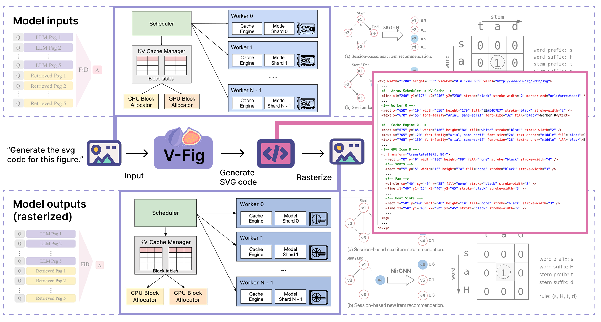

M.S. Student @ University of Washington
xunmel [at] cs.washington.edu CV GitHub LinkedIn
Hi! I am a Master's student (2025 – 2026) in Computer Science & Engineering at the University of Washington, where I also received my B.S. in Computer Science. I collaborate with Prof. Ranjay Krishna at the UW CSE RAIVN Lab on multimodal AI research.
My interests lie broadly in reinforcement learning, large language models, and ML systems. Previously, I interned at ByteDance Seed working on large-scale RL training infrastructure. I am joining Google Spanner as a software engineer intern in summer 2026, working on ML models for resource optimization.
Publications

Industry experience
Software Engineer Intern (Summer 2026)
Google, Spanner
Optimizing CPU provisioning for replication workloads in Spanner's infrastructure.
Software Engineer Intern (2025)
ByteDance, Seed
Built RL training infrastructure for large-scale rollout pipelines and an agent sandbox.
Machine Learning Intern (Summer 2024)
AdasEco
Trained object-detection models for autonomous driving with distributed training.
Teaching
Teaching Assistant (nine quarters)
University of Washington
- Probability
- Data Structures
- Computer Graphics
- Intro to Java III